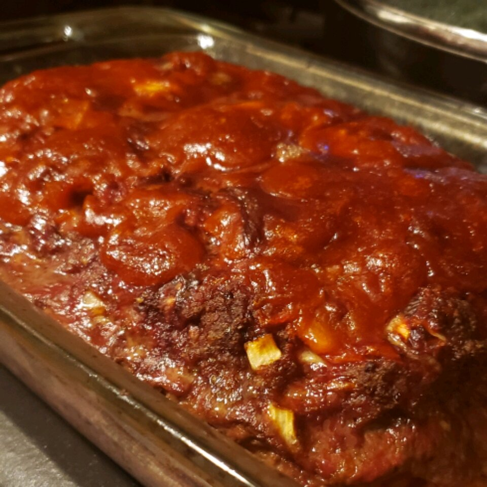

Meatloaf

Description
This is a very easy and no fail recipe for meatloaf. It won't take long to make at all, and it's quite good!
Ingredients
- 1 ½ pounds ground beef
- 1 egg
- 1 onion, chopped
- 1 cup milk
- ...
Steps
- Preheat oven to 350 degrees F (175 degrees C).
- In a large bowl, combine the beef, egg, onion, milk and bread OR cracker crumbs. Season with salt and pepper to taste and place in a lightly greased 9x5-inch loaf pan, or form into a loaf and place in a lightly greased 9x13-inch baking dish.
- In a separate small bowl, combine the brown sugar, mustard and ketchup. Mix well and pour over the meatloaf.
- Bake at 350 degrees F (175 degrees C) for 1 hour.
return to main page